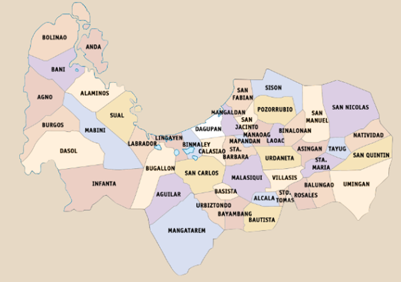

Pangasinan is where coastlines stretch endlessly and culture flows as deep as the sea. The province offers a calming blend of nature, heritage, and hospitality. Known for its flavorful cuisine and strong sense of community, it celebrates life through every dish, dance, and devotion. In Pangasinan, you don’t just visit — you feel at home.
This shows the statistics about the languages spoken across Pangasinan's municipalities.
